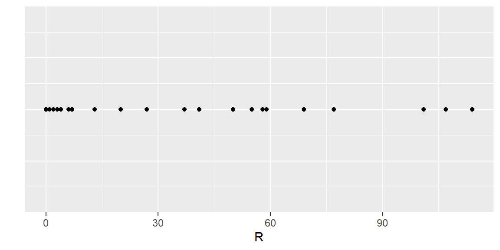
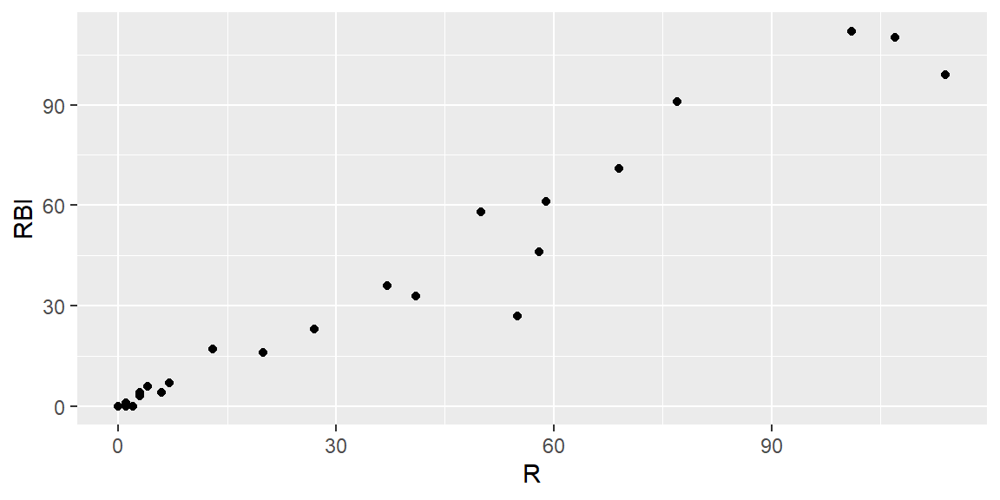
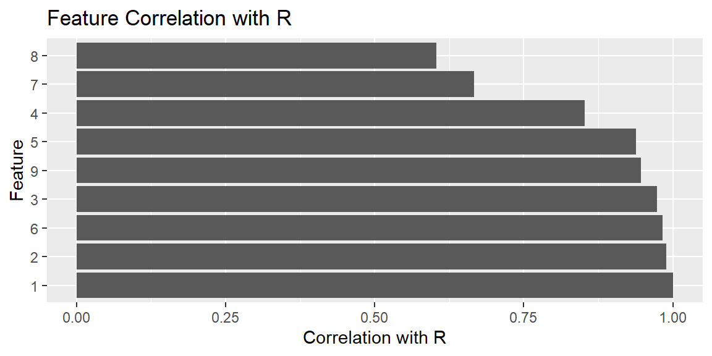
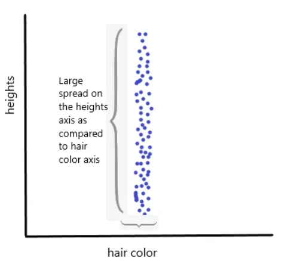
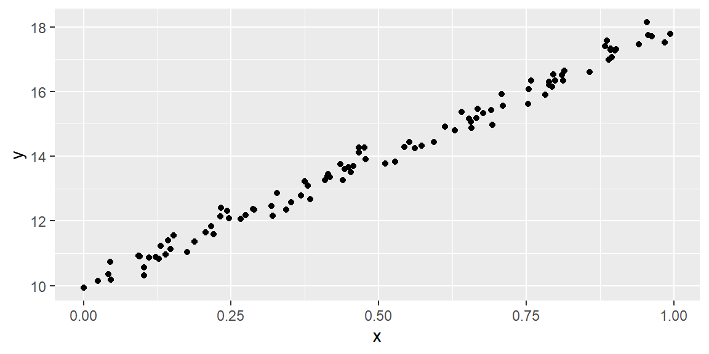
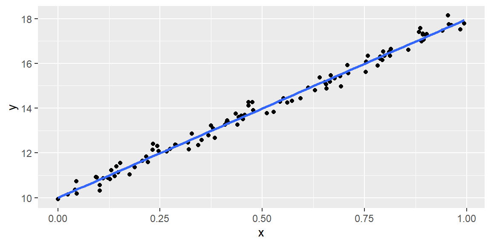
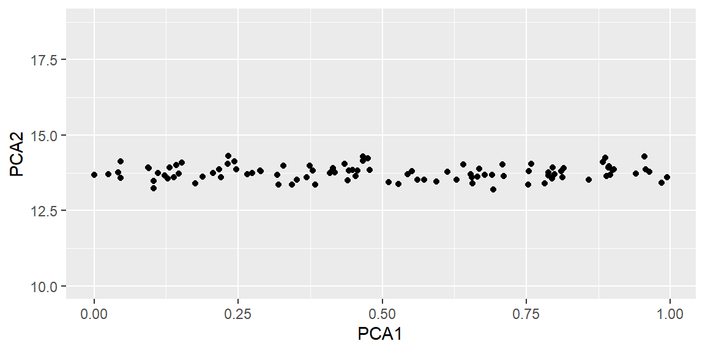
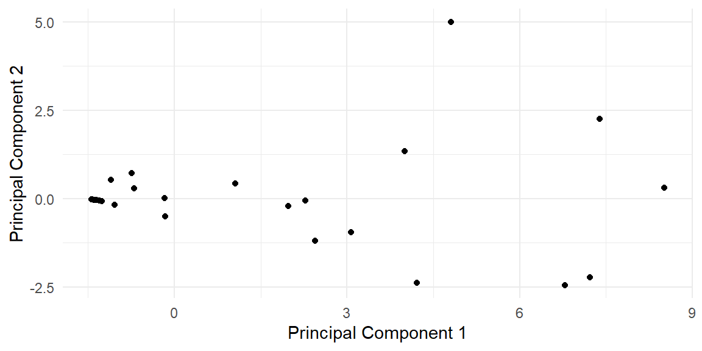

14 Dimensionality Reduction
“Everyone has a plan ’till they get punched in the mouth.” - Mike Tyson
14.1 Introduction
In the realm of statistics and data science, the ability to effectively analyze and draw insights from data is paramount. As we venture into the era of big data, we encounter datasets of increasing complexity and size. These datasets often comprise a vast number of variables, a situation described as high dimensionality. Understanding the concept of dimensionality reduction is essential, not just as an abstract mathematical idea but as a practical tool for making sense of complex data.
Dimensionality reduction sits at the heart of sports analytics, serving as a bridge between raw data and actionable insights. It addresses several critical challenges in data analysis, including the curse of dimensionality, noise in the dataset, and the difficulties involved in visualizing multidimensional data. By simplifying the data without significant loss of information, dimensionality reduction techniques enable us to build models that are not only more efficient but also more interpretable.
The study of dimensionality reduction offers a glimpse into the interdisciplinary nature of data science, where statistics, computer science, and domain expertise converge. This area highlights the importance of understanding both the theoretical foundations and the practical applications of statistical methods. While the mathematical underpinnings, such as linear algebra, are crucial, the focus here is on grasping the conceptual framework and the impact of dimensionality reduction on data analysis.
The introduction to dimensionality reduction begins with the rationale behind it. As datasets grow in size and complexity, the limitations of traditional analytical tools become apparent. The curse of dimensionality, a phenomenon where the data space expands so much that our data becomes sparse, affects not only the computational feasibility of models but also their performance. Reducing the number of input variables helps mitigate these issues, making models simpler, faster, and more generalizable.
Moreover, in a practical setting, the reduction of dimensionality can be pivotal for noise reduction and visualization. By filtering out irrelevant or redundant features, we improve the model’s accuracy and reliability. Similarly, the transformation of high-dimensional data into a more manageable form allows for effective visualization, which is indispensable for data exploration and hypothesis generation.
Dimensionality reduction techniques, categorized into feature selection and feature extraction, offer a toolkit for addressing these challenges. Feature selection methods focus on identifying the most relevant features for the models. On the other hand, feature extraction techniques like Principal Component Analysis (PCA), transform the original features into a new set of variables that better capture the underlying structure of the data.
14.2 Reasons for Dimensionality Reduction
14.2.1 Curse of Dimensionality:
The curse of dimensionality refers to various phenomena that arise when analyzing and organizing data in high-dimensional spaces (often with hundreds or thousands of dimensions) that do not occur in low-dimensional settings such as the three-dimensional physical space of everyday experience. It’s essential in understanding how dimensionality affects data analysis, leading to specific issues like data sparsity and increased computational complexity.
Understanding the Curse of Dimensionality
When the dimensionality increases, the volume of the space increases so rapidly that the available data become sparse. This sparsity is problematic for any method that requires statistical significance. In order to obtain a statistically reliable result, the amount of data needed to support the result often grows exponentially with the dimensionality. Additionally, high-dimensional datasets are often accompanied by increased computational complexity and a greater chance of overfitting, making models less generalizable to new data.
Example using the Batting dataset
The Batting dataset in the Lahman library consists of batting statistics for MLB players.
Loading and Exploring the Data
Below is a scatterplot matrix of the pairs of 9 of the quantitative features for the Texas Rangers during the 2004 season.
With so many variables, it becomes cumbersome to visualize the relationships between the variables. The above scatterplot matrix shows the scatterplots of the 36 pairs of variables when you have nine features. It becomes difficult to examine all of these scatterplots. These plots also do not show any relationships between three variables at a time, and so forth.
In addition to visualization, the curse of dimenstionality also implies the sparseness of the data when we have more variables.
Let’s first examine the variable R. Below is a dotplot for this variable.
Batting |>
filter(yearID==2004 & teamID=="TEX") |>
ggplot(aes(x = R, y = 0))+
geom_point()+
ylab("")+
theme(
axis.ticks.y=element_blank(),
axis.text.y=element_blank()
)
Note that the min value of R is 0 and the max value is 114. There are 53 observations so we can think of the data for this variable as 53 pieces of information in that variable’s dimension (the \(x\) dimenstion on the plot above). Let’s calculate the ratio of information to the dimensional space:
\[ \frac{53}{114-0} = 0.4649 \]
Let’s now examine another variable along with R. Below is the scatterplot of R and RBI
Batting |>
filter(yearID==2004 & teamID=="TEX") |>
ggplot(aes(x = R, y = RBI))+
geom_point()
For RBI, the range of values are min = 0 and max = 112. The total dimensional space that these two variables take is \[
\begin{align*}
\text{dimensional space for R}\times\text{dimensional space for RBI} &= 114 \times 112\\
&= 12768
\end{align*}
\]
We still only have 25 observations. The 53 pieces of information that we have in this two-dimensional space gives us the ratio \[ \frac{53}{12768} = 0.0042 \]
So in two-dimensional space, the amount of data we have is a much lower ratio of the space than when we had in only one dimension.
Let’s now add in a third variable BB. Note that the dimensional space for BB is min = 0 and max = 75. The size of the total dimensional space is \[
\begin{align*}
\text{dim. space for R}\times\text{dim. space for RBI}\times\text{dim. space for BB} &= 114 \times 112 \times 75\\
&= 957600
\end{align*}
\]
Again, we still only have 53 observations. So our 53 pieces of information only take up a ratio of \[ \frac{53}{957600}=0.00006 \] of the 3-dimensional space. The more variables we have, the higher the dimensional space our observations are in. The ratio of our observations to the area of the dimensional space will continue to decrease. Thus, the amount of data available in that high dimension is sparse. This is the curse of dimensionality.
14.3 Techniques of Dimensionality Reduction
There are several techniques for reducing the dimensionality of data, broadly categorized into Feature Selection and Feature Extraction.
14.3.1 Feature Selection
Feature selection involves selecting a subset of the most relevant features for use in model construction. There are three main types of feature selection methods:
Filter Methods:
Filter Methods are among the first steps you can take in preprocessing your data for machine learning models. They are computationally less expensive than Wrapper and Embedded Methods because they do not involve training models as part of the feature selection process. Instead, they rely on general characteristics of the data, such as correlation coefficients, Chi-square tests, and mutual information.
Advantages:
- Speed: They are fast and scalable to high-dimensional datasets because they evaluate features in isolation from the model.
- Simplicity: These methods are straightforward to understand and implement.
- Model Agnostic: They can be applied regardless of the choice of machine learning algorithm.
Disadvantages:
Less Accurate: They might not capture feature interactions well because they evaluate each feature independently.
No Model Context: They do not consider how features will interact when combined in a model, potentially overlooking combinations that would improve model performance.
Common Techniques in Filter Methods
Correlation Coefficient: This measures the linear relationship between two variables. Features with very low correlation to the target variable can be removed.
Chi-Square Test: This statistical test is used to determine if there is a significant association between two categorical variables. It can be used to select relevant features for classification problems.
Mutual Information: This measures the amount of information one can obtain from one variable through another. A higher value means more information shared, making it useful for feature selection.
Variance Threshold: This method removes all features whose variance doesn’t meet some threshold. Since variables with a low variance are less likely to affect the target variable, they can be considered for removal.
Application of Filter Methods
Filter Methods are widely used at the beginning stages of the feature selection process, especially when dealing with very high-dimensional data. They help in narrowing down the feature set to a more manageable size, which can then be further refined using more sophisticated techniques like Wrapper and Embedded Methods.
Example: Batting data
Suppose R is the response variable. We can examine the correlation between R and all other features.
correlation_matrix <- Batting |>
filter(yearID==2004 & teamID=="TEX") |>
select(R:BB) |>
cor()
correlations <- correlation_matrix['R', ]
print(correlations) R H X2B X3B HR RBI SB CS
1.0000000 0.9886300 0.9737135 0.8520469 0.9385321 0.9828114 0.6668248 0.6036253
BB
0.9459635 # Visualize the correlations for better understanding
correlations %>% as_tibble() %>%
rownames_to_column("Feature") %>%
ggplot(aes(x = reorder(Feature, -value), y = value)) +
geom_bar(stat = "identity") +
coord_flip() +
labs(y = "Correlation with R",
x = "Feature",
title = "Feature Correlation with R")
# Select features based on a correlation threshold, for example, features with absolute correlation > 0.7
relevant_features <- names(correlations[which(abs(correlations) > 0.7)])
print(relevant_features)[1] "R" "H" "X2B" "X3B" "HR" "RBI" "BB" While Filter Methods are an efficient way to reduce dimensionality, especially in the preliminary stages of model development, they should be part of a broader feature selection strategy that may include more sophisticated methods. Combining various methods thoughtfully can lead to the development of more accurate and robust predictive models.
Wrapper Methods:
Wrapper methods select features based on the performance of a predictive model, where features are added or removed according to their contribution to model accuracy. This approach differs from filter methods, which rely on the general characteristics of the data, and embedded methods, which perform feature selection as part of the model training process.
Example: Applying Wrapper Methods to the Batting Dataset
Assuming we are interested in modeling R based on the other batting statistics, we could use a wrapper method to select the most relevant features for predicting runs. This process involves iteratively adding or removing features based on their impact on the model’s predictive accuracy.
We use a stepwise regression approach, which considers both addition and removal of features based on their statistical significance to the model’s performance. The stepAIC function from the MASS package in R can perform this operation, aiming to minimize the Akaike Information Criterion (AIC) for model selection:
library(MASS)
library(tidyverse)
dat = Batting |>
filter(yearID==2004 & teamID=="TEX") |>
dplyr::select(R:BB)
fit <- lm(R ~ ., data=dat)
stepModel <- stepAIC(fit, direction="both", trace = 1)Start: AIC=70.36
R ~ H + X2B + X3B + HR + RBI + SB + CS + BB
Df Sum of Sq RSS AIC
- SB 1 0.546 142.90 68.568
- CS 1 0.987 143.34 68.731
<none> 142.35 70.365
- H 1 7.925 150.28 71.236
- HR 1 22.283 164.63 76.072
- X2B 1 32.174 174.53 79.165
- RBI 1 101.383 243.73 96.867
- X3B 1 106.221 248.57 97.909
- BB 1 194.869 337.22 114.074
Step: AIC=68.57
R ~ H + X2B + X3B + HR + RBI + CS + BB
Df Sum of Sq RSS AIC
- CS 1 0.55 143.44 66.769
<none> 142.90 68.568
+ SB 1 0.55 142.35 70.365
- H 1 28.94 171.84 76.341
- HR 1 49.14 192.04 82.232
- X2B 1 147.27 290.17 104.109
- X3B 1 168.83 311.73 107.908
- RBI 1 179.33 322.23 109.664
- BB 1 341.15 484.05 131.230
Step: AIC=66.77
R ~ H + X2B + X3B + HR + RBI + BB
Df Sum of Sq RSS AIC
<none> 143.44 66.769
+ CS 1 0.55 142.90 68.568
+ SB 1 0.10 143.34 68.731
- H 1 32.41 175.86 75.567
- HR 1 61.07 204.51 83.567
- X2B 1 146.73 290.18 102.110
- RBI 1 181.01 324.45 108.027
- X3B 1 199.91 343.36 111.030
- BB 1 377.96 521.40 133.170summary(stepModel)
Call:
lm(formula = R ~ H + X2B + X3B + HR + RBI + BB, data = dat)
Residuals:
Min 1Q Median 3Q Max
-7.5557 0.0618 0.0618 0.5715 3.8356
Coefficients:
Estimate Std. Error t value Pr(>|t|)
(Intercept) -0.06181 0.28073 -0.220 0.82671
H -0.20661 0.06409 -3.224 0.00233 **
X2B 0.90354 0.13172 6.860 1.48e-08 ***
X3B 5.17137 0.64587 8.007 2.89e-10 ***
HR -0.84258 0.19040 -4.425 5.87e-05 ***
RBI 0.79409 0.10423 7.619 1.08e-09 ***
BB 0.48002 0.04360 11.009 1.75e-14 ***
---
Signif. codes: 0 '***' 0.001 '**' 0.01 '*' 0.05 '.' 0.1 ' ' 1
Residual standard error: 1.766 on 46 degrees of freedom
Multiple R-squared: 0.997, Adjusted R-squared: 0.9966
F-statistic: 2570 on 6 and 46 DF, p-value: < 2.2e-16This code starts with a model that includes all available features (except R, which is our target variable) and then iteratively adds or removes features to find a combination that offers the best balance between model complexity and predictive power, as measured by the AIC.
Evaluating the Selected Features
The output of stepAIC will indicate which features have been selected as predictors for Runs. These features are deemed by the stepwise regression process as having significant predictive power for R, after considering the potential for overfitting (through AIC minimization).
This approach allows for an automated and data-driven selection of features, which can be especially useful when dealing with datasets with many variables. By focusing on the subset of features that contribute most to prediction accuracy, wrapper methods can help create more efficient and interpretable models.
Embedded Methods:
Embedded methods are particularly useful as they perform feature selection while the model is being trained, which can lead to a more optimal set of features for the prediction task at hand. Regularization methods like LASSO (Least Absolute Shrinkage and Selection Operator) are common examples of embedded methods because they both train the model and select features by penalizing the absolute size of the regression coefficients.
Embedded methods combine the qualities of filter and wrapper methods by performing feature selection as part of the model training process. This approach can lead to more accurate and efficient models because it considers the interaction between features and the model. One key advantage of embedded methods is their ability to capture complex interactions between features, which might be missed by filter methods.
Example: Batting Data
In this example, we’ll use the Batting data to predict Runs. We’ll apply LASSO regression, an embedded method, using the tidymodels framework.
We’ll use a LASSO regression model, which is suited for datasets with potentially correlated predictors and can help in feature selection by shrinking some coefficients to zero.
library(MultBiplotR)
library(tidymodels)
lasso_spec <- linear_reg(penalty = 0.1, mixture = 1) |>
set_engine("glmnet") |>
set_mode("regression")
recipe <- recipe(R ~ ., data = dat) |>
step_normalize(all_numeric_predictors()) |>
prep()
dat_baked = recipe |> bake(new_data = NULL)
lasso_fit <- lasso_spec %>%
fit(R~., data = dat_baked)
lasso_fit |>
tidy()# A tibble: 9 × 3
term estimate penalty
<chr> <dbl> <dbl>
1 (Intercept) 16.2 0.1
2 H 0 0.1
3 X2B 6.68 0.1
4 X3B 6.05 0.1
5 HR 0 0.1
6 RBI 10.7 0.1
7 SB 0 0.1
8 CS 0.185 0.1
9 BB 8.31 0.1This process will provide us with an understanding of which features are most predictive of Runs, leveraging the embedded method’s ability to perform feature selection in conjunction with model training. By focusing on the subset of features that contribute most to prediction accuracy, we can create more efficient and interpretable models.
14.4 Feature Extraction
Feature extraction transforms the data in the high-dimensional space to a space of fewer dimensions. The data transformation may be linear or nonlinear, with the transformed features being combinations of the original features. The most common feature extraction techniques include:
Principal Component Analysis (PCA):
- Purpose: PCA reduces dimensionality by transforming the original variables into a new set of uncorrelated variables, called principal components, which are ordered by the amount of original variance they capture. The first principal component captures the most variance, the second captures the second most, and so on.
Suppose we had two variables: height and hair color (some measure of darkness of hair) for a Native American tribe. Below is a scatterplot of the two variables:

It’s evident that in this tribe, the variation in hair color among individuals is minimal compared to the range of their heights. Therefore, height emerges as a more significant characteristic than hair color. Consequently, by incorporating only the height of individuals from this tribe as a feature in the dataset, we can preserve the majority of the relevant information.
Most situation do not result in a scatterplot as we see above. Instead, you may see a situation as below.

Instead of \(X\) or \(y\) having small variability, we can imagine a line drawn through the points and the variability of the points about that line is small.

If we rotate the plot so that the blue line is now the horizontal axis, the new axes can then be examined and we can use ony the axis that has the larger variability. These new axes are called the Principal Components.

In this example, the first principal component (PCA1) has large variability. the second principal component (PCA2) has small variability. So if we use only PCA1 as our feature, then we only lose a small amount of information in how the data varies when we do not select PCA2.
PCA starts by calculating the covariance matrix of the data to understand how variables are related. It then computes the eigenvectors and eigenvalues of this covariance matrix. Eigenvectors determine the directions of the new space, and eigenvalues determine their magnitude. In essence, the eigenvectors with the highest eigenvalues are selected to form the new set of variables.
Linear Discriminant Analysis (LDA):
- Purpose: LDA is a supervised dimensionality reduction technique used to find the linear combinations of features that best separate two or more classes of objects or events. The goal is to project the features in higher-dimensional space onto a lower-dimensional space with good class-separability in order to avoid overfitting (“curse of dimensionality”) and also reduce computational costs.
- How it Works: LDA computes the directions (“linear discriminants”) that will represent the axes that maximize the separation between multiple classes. It takes the mean and variance of each class into account and seeks to reduce variance within each class while maximizing variance between the classes.
- Applications: LDA is particularly useful in the preprocessing steps for pattern classification and machine learning applications. Its application spans across various fields including face recognition, medical diagnosis, and any domain requiring classification tasks.
t-Distributed Stochastic Neighbor Embedding (t-SNE):
- Purpose: t-SNE is a nonlinear technique for dimensionality reduction that is particularly well suited for the visualization of high-dimensional datasets. It converts similarities between data points to joint probabilities and tries to minimize the divergence between these joint probabilities in the high-dimensional and low-dimensional space.
- How it Works: t-SNE starts by calculating the probability that pairs of datapoints in the high-dimensional space are similar, then uses a gradient descent method to minimize the difference between this probability distribution and a similar distribution in the low-dimensional space.
- Applications: Because of its ability to preserve local structures and resolve clusters in a small area of the map, t-SNE is highly favored for visualizing high-dimensional data such as genetic data, image data, or text data.
Considerations When Choosing a Feature Extraction Technique:
- The nature of the dataset: Is it linear or nonlinear? PCA and LDA assume linear relationships between variables, while t-SNE does not.
- Supervised vs. Unsupervised learning: PCA and t-SNE are unsupervised methods (they do not require labeled data), whereas LDA is supervised (requires labeled data).
- Goal of dimensionality reduction: Is the goal to improve visualization (t-SNE), to prepare for a classification task (LDA), or to reduce feature space while retaining variance (PCA)?
- Computational resources and dataset size: PCA and LDA are relatively more computationally efficient than t-SNE, especially for very large datasets.
PCA Example: Batting Data
# PCA with tidymodels
pca_recipe <- recipe(~., data = dat) %>%
step_normalize(all_predictors()) %>%
#Get enough PCs to get 95% of variance
step_pca(all_predictors(), threshold = .95) |>
prep()
# Extract the PCA results
pca_results <- bake(pca_recipe, new_data = NULL)
# View the results
print(pca_results)# A tibble: 53 × 3
PC1 PC2 PC3
<dbl> <dbl> <dbl>
1 -1.25 -0.0800 -0.0304
2 -0.696 0.283 -0.341
3 -1.44 -0.0152 -0.0698
4 -1.36 -0.0432 0.00207
5 -1.44 -0.0152 -0.0698
6 2.45 -1.19 0.357
7 -1.43 -0.0193 -0.0694
8 -1.44 -0.0152 -0.0698
9 7.22 -2.23 1.25
10 -1.44 -0.0152 -0.0698
# ℹ 43 more rowstidy(pca_recipe, number = 2, type = "variance") |>
filter(terms == "cumulative percent variance") |>
print()# A tibble: 9 × 4
terms value component id
<chr> <dbl> <int> <chr>
1 cumulative percent variance 81.7 1 pca_zPW5q
2 cumulative percent variance 92.9 2 pca_zPW5q
3 cumulative percent variance 97.2 3 pca_zPW5q
4 cumulative percent variance 98.8 4 pca_zPW5q
5 cumulative percent variance 99.6 5 pca_zPW5q
6 cumulative percent variance 99.9 6 pca_zPW5q
7 cumulative percent variance 100. 7 pca_zPW5q
8 cumulative percent variance 100. 8 pca_zPW5q
9 cumulative percent variance 100 9 pca_zPW5qWe see that only three principal components are needed to capture 95% of the variability present in the nine predictor variables.
# Visualize PCA results
pca_results %>%
ggplot(aes(x = PC1, y = PC2)) +
geom_point() +
theme_minimal() +
xlab("Principal Component 1") +
ylab("Principal Component 2")